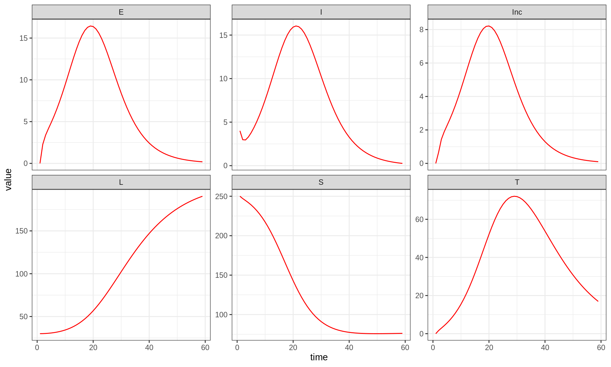
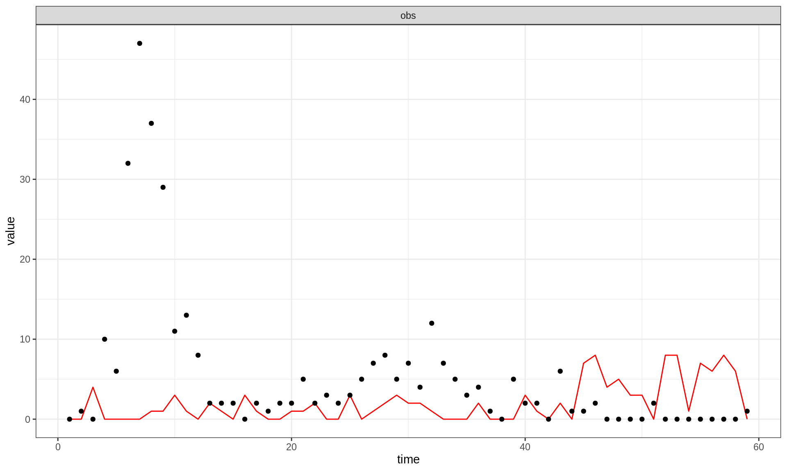
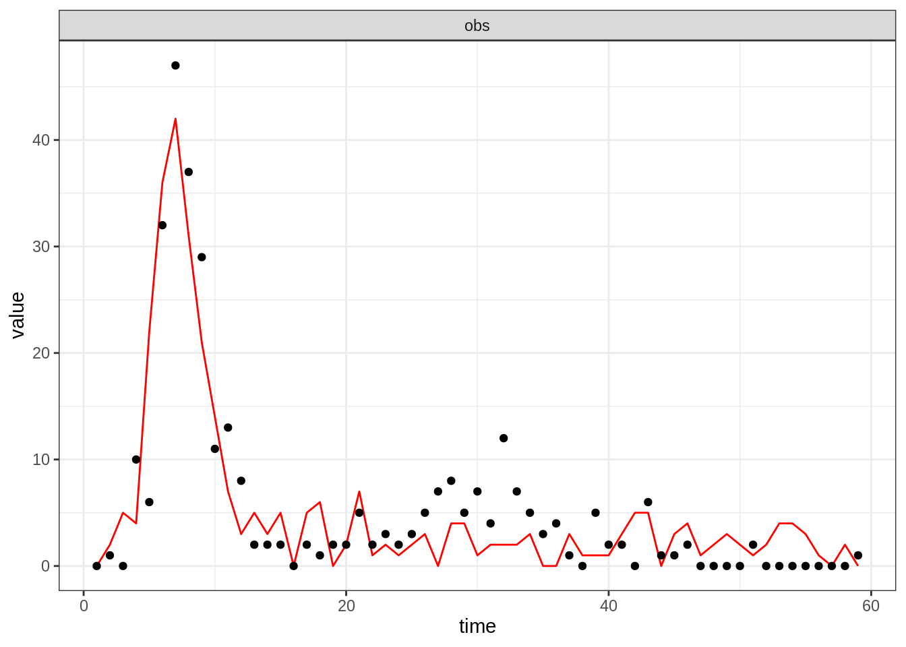
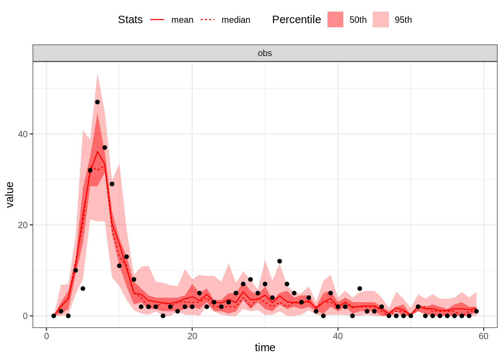
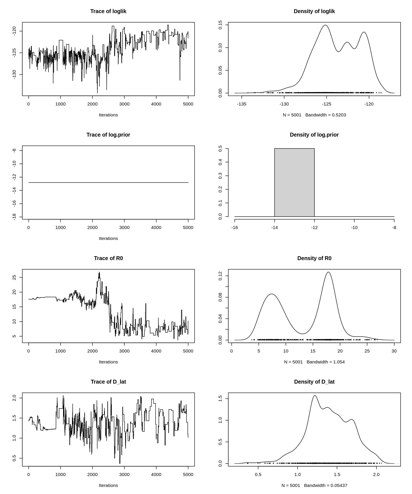
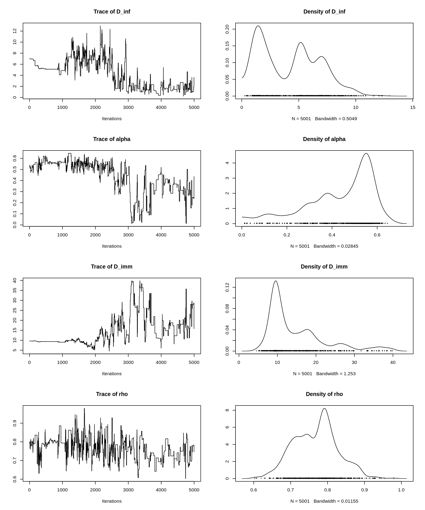
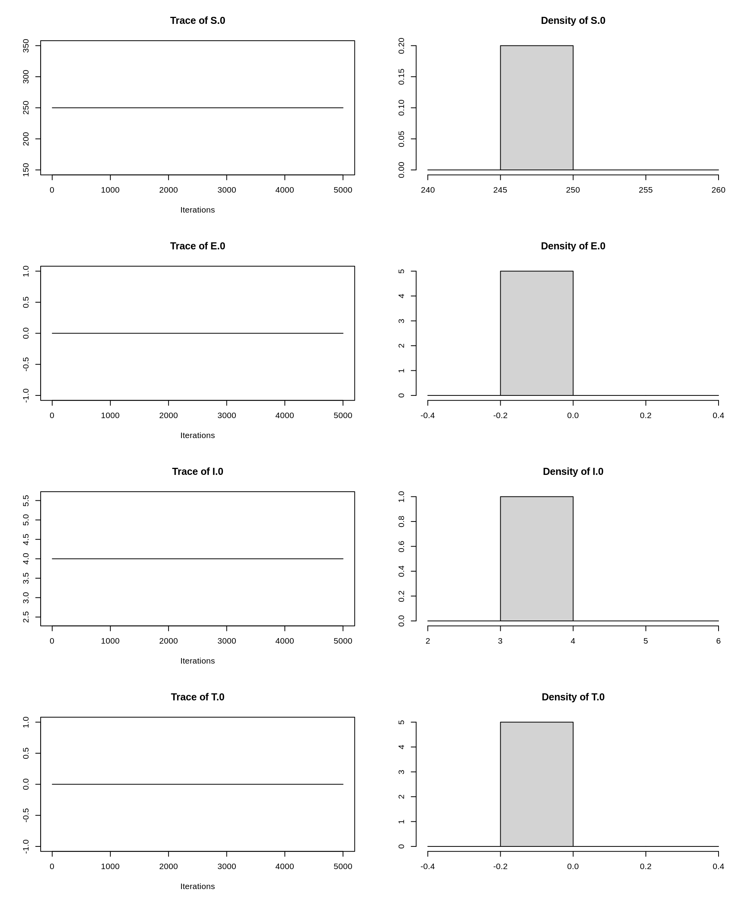
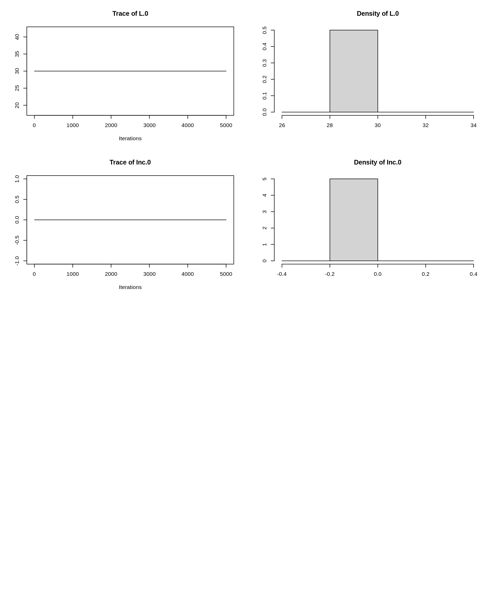

The aim of this session is to introduce the R package pomp, which contains functions for many of the tasks we have performed in this course. The benefit of using a package like pomp (or alternatives such as SSM or libbi) is that they have been optimised for computational efficiency and can take full advantage of any available hardware (including running on a high-performance cluster). The disadvantage of using readily available packages is that 1) to allow for good performance, models are usually not coded in R, 2) any specific method or functionality you want to use might not be implemented, and 3) they can be more difficult to debug when something is going wrong.
The aim of this session is to see how the different methods we have encountered in the course can be applied to fit a model to data using pomp. It is meant to serve both as a recap of what you have done in the last few days as well as an introduction to one of the available packages for model fitting and inference.
In the previous session, you coded a particle filter to estimate the likelihood, and the function mcmcMh to sample from the posterior distribution with a Metropolis-Hastings algorithm.
In this session you will:
pomp using C snippets or R codepompTo do model fitting with pomp, you need to create a pomp object. This works a bit like the fitmodel objects we created earlier. To create a pomp object, you need to specify a data set as well as functions that simulate the model, evaluate the prior density, etc. The components and functions that need to go into a pomp object are determined by the method that one wants to use. For more information on this, you can have a look at the recent article on pomp in the Journal of Statistical Software.
To load the pomp library, type
library("pomp")If this does not work, you need to install the pomp library first. You can do this using
install.packages("pomp")To specify a model that you want to fit to data in pomp, you can either write a function in R, or you can use so-called C snippets, that is model code written in C that is pre-compiled and can be called from an R function. The advantage of doing this is that you can benefit from the speed of compiled C code while not having to learn an awful lot about the details of C syntax.
We have coded up the models of the previous practical sessions in pomp for you. To look at, for example, the SEITL model, use
source("https://sbfnk.github.io/mfiidd/pomp/seitlPomp.r", echo = TRUE)If this yields a compile error, have a look at the important information for windows and mac users or ask us for help. If you can’t get it to work at all, you work with the R versions of the code (see the note after the next paragraph).
Take 15 minutes to have a look at the code that is printed when you execute this command, and try to understand what it does. You can have a look at our more detailed explanation for further help. If your R client truncates the output, you can look at the full code in a browser by looking at https://github.com/sbfnk/mfiidd/blob/main/Rmd/pomp/seitlPomp.r or the files at https://github.com/sbfnk/mfiidd/tree/main/Rmd/pomp for the other files in the practical to which we refer below.
Note: For the examples presented here, we are providing an alternative version that is coded entirely in R. To look at this, simply add “” to the file names (before the .r extension). For example, to see the R version of the SEITL model in pomp, type
source("https://sbfnk.github.io/mfiidd/pomp/seitlPompR.r", echo = TRUE)which creates an object called seitlPompR.
How would you change the (C or R code) to get the SEIT4L model? You can have a go at it yourself, or load our version using
source("https://sbfnk.github.io/mfiidd/pomp/seit4lPomp.r", echo = TRUE)(again, simply add “R” to get the R version).
We now have a pomp object called seitlPomp (or seitlPompR, or seit4lPomp etc.), containing the data, the deterministic skeleton, the stochastic model and the observation process. All the functions we use below take this object as argument and pick whichever elements from within the seitlPomp are needed.
Now try the following operations (with SEITL or SEIT4L). For full documentation of the functions used, refer to the R help pages, which you can access using ?function (replacing ‘function’ with the name of the function you are interested in).
We suggest that you try the methods described below with both of the models.
Let’s, again, guess some parameters and initial values:
theta <- c(R0 = 2, D_lat = 2, D_inf = 2, alpha = 0.9, D_imm = 13, rho = 0.85)
seitlInitState <- c(S.0 = 250, E.0 = 0, I.0 = 4, T.0 = 0, L.0 = 30, Inc.0 = 0)
seit4lInitState <- c(S.0 = 250, E.0 = 0, I.0 = 4, T1.0 = 0, T2.0 = 0, T3.0 = 0, T4.0 = 0,
L.0 = 30, Inc.0 = 0)Note the pomp syntax, whereby initial states are named as the named variable with .0 appended. Note also that the SEIT4L model needs a slightly different initial state (because the variable names are different).
seitlTraj <- trajectory(seitlPomp, params = c(theta, seitlInitState), format = "data.frame")
plotTraj(seitlTraj)
The trajectory function simulates the deterministic skeleton of the pomp object it is given, ignoring all process or measurement stochasticity.
seitlSim <- simulate(seitlPomp, params = c(theta, seitlInitState), include.data = FALSE,
format = "data.frame")
plotTraj(seitlSim, data = fluTdc1971, stateNames = "obs") The simulate function simulates the (stochastic) model of the pomp object it is given. By specifying obs = TRUE and states = TRUE, we indicate that we want to have both the model states and observations in the data frame that is returned.
pf <- pfilter(seitlPomp, params = c(theta, seitlInitState), Np = 100)
logLik(pf)## [1] -232.9946This estimates the likelihood of the given parameters using a particle filter with Np = 100 particles.
Several methods are available in pomp for fitting a deterministic or stochastic model to data using maximum likelihood. Remember that this implies a frequentist method, that is the prior distribution is ignored, and the parameter values that yield maximum likelihood are interpreted as the true parameters.
seitlTm <- traj_objfun(seitlPomp, params = c(theta, seitlInitState), est = names(theta))
res <- optim(par = log(theta), fn = seitlTm)logLik(seitlTm)## [1] -139.4111This fits the deterministic skeleton to the data by maximising the likelihood using a standard optimisation method (see ?traj_objfun for details on the methods available). That is, it ignores all process noise (or demographic stochasticity) in the model.
We can use the best-fit parameters from trajectory matching to simulate multiple trajectories from the stochastic model by passing the new object seitlTm to simulate.
seitlTmSim <- simulate(seitlTm, nsim = 10, format = "data.frame")
plotTraj(seitlTmSim, data = fluTdc1971, stateNames = "obs")
propSd <- rep(0.01, length(theta))
names(propSd) <- names(theta)
rwSd <- do.call(rw_sd, as.list(propSd))
seitlMf <- mif2(seitlPomp, params = coef(seitlTm), Nmif = 50, Np = 1000, cooling.fraction.50 = 0.01,
rw.sd = rwSd)
seitlMfSim <- simulate(seitlMf, nsim = 10, include.data = TRUE, format = "data.frame")
plotTraj(seitlMfSim, data = fluTdc1971, stateNames = "obs")
logLik(seitlMf)## [1] -123.9984This fits the stochastic model to the data by maximising the likelihood using so-called iterated filtering. The parameters to be fitted are randomly perturbed (via a so-called random walk) in parameter space and the likelihood estimated with a particle filter. When iterating this procedure with smaller and smaller perturbations (i.e., smaller and smaller steps in the random walk), the parameters converge to the maximum likelihood estimate. For more information on maximum likelihood by iterated filtering, see the references given on the wikipedia page.
In the function call above, we have used Nmif = 50 iterations of MIF for finding the parameters that maximise the likelihood, Np = 1000 particles for the likelihood itself, and a proportion of cooling.fraction.50 = 0.01 of the random walk intensity remaining after 50 iterations.
Note that we have initialised the method with the maximum likelihood estimate obtained from trajectory matching the deterministic model (seitlTm). It is a common procedure to initialise more computationally intensive models with results from a simpler, more approximate method.
Several methods are available in pomp for fitting a deterministic or stochastic model to data by sampling from the posterior distribution. Remember that this implies a Bayesian method, that is the prior distribution is taken into account, and the parameter vectors sampled from the posterior distribution are interpreted as draws from a random distribution that encodes our uncertainty.
The following code runs pMCMC with adaptation of the proposal distribution using the model given to the POMP object. Note: you can try first with a smaller value of the Nmcmc parameter; depending on the power of your computer, the code below can take a while to run.
# run pMCMC with adaptive MCMC
seitlPmcmc <- pmcmc(seitlPomp, params = coef(seitlMf), Nmcmc = 5000, Np = 128, proposal = mvn_rw_adaptive(rw.sd = propSd,
scale.start = 100, shape.start = 200))
trace <- traces(seitlPmcmc)library("coda")
# acceptance rate
1 - rejectionRate(trace)## loglik log.prior R0 D_lat D_inf alpha D_imm rho
## 0.163 0.000 0.163 0.163 0.163 0.163 0.163 0.163
## S.0 E.0 I.0 T.0 L.0 Inc.0
## 0.000 0.000 0.000 0.000 0.000 0.000plot(trace)
This runs pMCMC on the model, here for Nmcmc = 5000 MCMC iterations with Np = 128 particles. If you’re interested in seeing the adaptation of the covariance matrix in action, you can run the pmcmc command above with the additional argument verbose = TRUE.
You will notice that the pMCMC runs much faster than the one we implemented earlier in the course. This is because both the model and the particle filter are now coded in C and compiled to fully use the processing power of the computer it runs on. Remember that the trace plots for the earlier practicals were obtained by running the code for several hours on a computing cluster. The code above, while perhaps not running for quite long enough for a reliable estimation of the posterior densities, should run in only a few minutes to run on your computer (on a Macbook Pro, it took a few minutes). You could try running the same sequence of commands with the seitlPompR object to see the enourmous difference in running times.
Look at the trace and density plots above. Are you satisfied with the performance of the MCMC? How would you check if you can trust the resulting posterior samples? What would you change if you weren’t satisfied? We hope that the knowledge and tools you have acquired in this course means you know what might be needed in order to obtain a reliable model fit. Do you get the same answers as yesterday?
This web site and the material contained in it were originally created in support of an annual short course on Model Fitting and Inference for Infectious Disease Dynamics at the London School of Hygiene & Tropical Medicine. All material is under a MIT license. Please report any issues or suggestions for improvement on the corresponding GitHub issue tracker. We are always keen to hear about any uses of the material here, so please do get in touch using the Discussion board if you have any questions or ideas, or if you find the material here useful or use it in your own teaching.